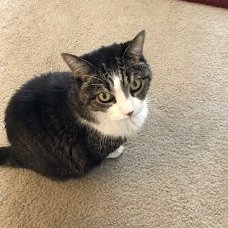

want to be there when it happens."
--Woody Allen
“It’s me. I. I’m the problem, it’s me.”
-–Taylor Swift
"It will happen to all of us that one day you'll be tapped on the shoulder and told - not just that the party's over - but worse: the party's going on, but you have to leave; and is going on without you. That's the reflection, I think, that most upsets people about their demise."
--Christopher Hitchens
As you may know, I put my little cat to sleep last week. (Thank you friends, for your comfort and kindness.)
You’d think I’d have been ready. After all, she was 18, and it had been almost 3 years of pills, fluids, and periodic emergency trips to the vet hospital.
So it shouldn’t have been much of a surprise when the time came.
And yet adjusting has been rough.
So I’ve been comforting myself with a useless, time-filling mental exploration of grief.
Because as Ramana said, “Why mourn the dead? They are free from bondage.”
Yet we do mourn the dead.
So what's that all about?
And what brings tears, when there were none a minute ago?
Well, first- difference. A whole lot is suddenly different when someone dies.
For me it’s been very weird after 37 years of living with pets, to no longer need to prepare food or clean water or clean the litterbox. It’s been very weird to no longer need to set alarms for medications, or to have kitty heating pads all over the house, or to keep the house warmer than I prefer.
As it has been noticed, each of those changes, each of those differences, has announced itself with tears.
Oh wait. Look at that.
None of those tear-bringing differences have to do with the cat.
They’re all about Judy.
No kitty (for me) to welcome and cuddle when I come home, no movement in the house (for me) to notice, no sounds (for me) to hear, no need (for me) to interpret the stoic and mysterious little ways of another life.
Could it be mourning has very little to do with the one that has died, and everything to do with the one that’s presumably left behind?
Surely there’s more to grief than that.
After all, there’s also meaning.
Y’know, about me.
“Did I let them down? Was I there for them? Was I kind enough, loving enough, supportive enough? Does this mean I am selfish? Does this mean I’m a bad person?”
Once again, none of that is about the one who died.
It may look like grief for another. But it’s all actually about the me.
Because we’re nothing without obsession with our own self.
Turns out, grief and “loss” is just another way the self verifies its existence.
Turns out, mourning is actually Self-absorbed, Self-ish, and Self-involved.
Not that we're not totally free to sob our little hearts out.
It’s just that it's ourselves we cry over.
Not the loved one. They are now, thankfully, fine.
They don't need our tears.
Once this is seen, the tears may stop.
And something may relax.
Something that doesn’t hurt, doesn’t cry, doesn’t mourn.
Something that's not missing out. Something that's not lost.
Because it could be that there is no loss.
When all is complete, and full,
and all filled up,
With love.
"Since before time, I have been free.
Birth and death are only doors through which we pass,
sacred thresholds on our journey.
Birth and death are a game of hide-and-seek.
So laugh with me,
hold my hand,
let us say good-bye,
say good-bye,
to meet again soon.
We meet today.
We will meet again tomorrow.
We will meet at the source every moment.
We meet each other in all forms of life."
--Thich Nhat Hanh
